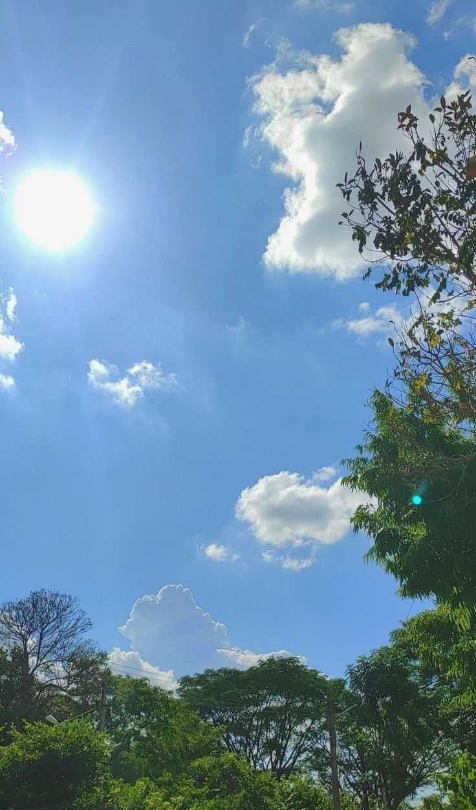

happy level up day!!!, make a wish for ur b'day, tahun ini umur kamu
bertambah satu tahun dan jatah hidup kamu berkurang satu tahun juga semoga kamu selalu sehat, kamu sekarang makin dewasa ,apapun yang kamu inginkan semoga bisa terjadi.
Terima kasih sudah sekuat ini dan bertahan hidup ,banyak hal yang sudah kamu laluin dan masih
banyak hal yang belum kamu laluin .Semakin kamu dewasa semakin
banyak juga rintangannya but it's okayyy karena masih banyak orang
yang sayang sama kamu ,apapun susahnya apapun sedihnya apapun
senangnya kamu nikmatin dan bersyukur selalu 🤍
Sekali lagi selamat ulang tahun yaa terima kasih sudah menjadi kuat
selama ini walaupun awalnya di kuat-kuat in aja dan selanjutnya harus
selalu kuat, ceria dan bahagia 🫶
yang terakhir, inget kata-kata ini ya?
"Untuk masa depan yang cerah, kamu dilarang untuk menyerah."
Happy Birthday Adindaaa 💐